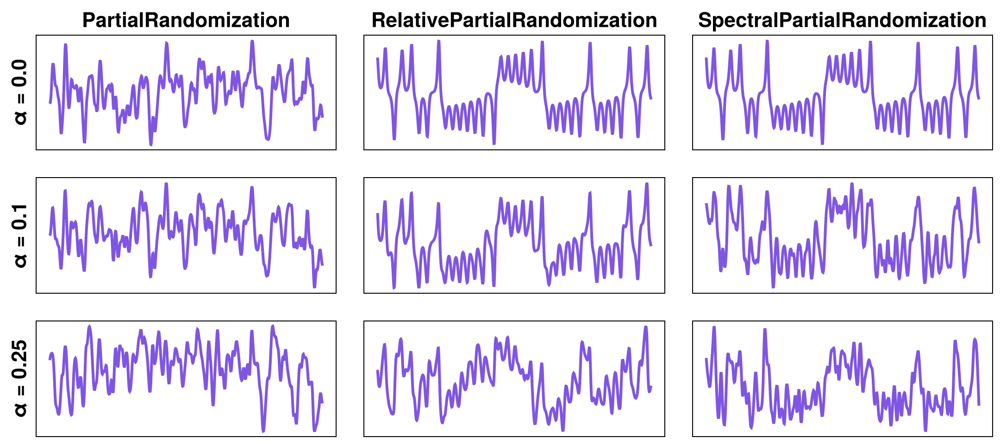

Fourier-based
Fourier based surrogates are a form of constrained surrogates created by taking the Fourier transform of a time series, then shuffling either the phase angles or the amplitudes of the resulting complex numbers. Then, we take the inverse Fourier transform, yielding a surrogate time series.
Random phase
using TimeseriesSurrogates, CairoMakie
ts = AR1() # create a realization of a random AR(1) process
phases = true
s = surrogate(ts, RandomFourier(phases))
surroplot(ts, s)Random amplitude
using TimeseriesSurrogates, CairoMakie
ts = AR1() # create a realization of a random AR(1) process
phases = false
s = surrogate(ts, RandomFourier(phases))
surroplot(ts, s)Partial randomization
Without rescaling
PartialRandomization surrogates are similar to random phase surrogates, but allow for tuning the "degree" of phase randomization. PartialRandomization use an algorithm introduced by Ortega et al., which draws random phases as:
\[\phi \to \alpha \xi , \quad \xi \sim \mathcal{U}(0, 2\pi),\]
where $\phi$ is a Fourier phase and $\mathcal{U}(0, 2\pi)$ is a uniform distribution. Tuning the randomization parameter, $\alpha$, produces a set of time series with varying degrees of randomness in their Fourier phases.
using TimeseriesSurrogates, CairoMakie
ts = AR1() # create a realization of a random AR(1) process
# 50 % randomization of the phases
s = surrogate(ts, PartialRandomization(0.5))
surroplot(ts, s)In addition to PartialRandomization, we provide two other algorithms for producing partially randomized surrogates, outlined below.
Relative partial randomization
The PartialRandomization algorithm corresponds to assigning entirely new phases to the Fourier spectrum with some degree of randomness, regardless of any deterministic structure in the original phases. As such, even for $\alpha = 0$ the surrogate time series can differ drastically from the original time series.
By contrast, the RelativePartialRandomization procedure draws phases as:
\[\phi \to \phi + \alpha \xi, \quad \xi \sim \mathcal{U}(0, 2\pi).\]
With this algorithm, phases are progressively corrupted by higher values of $\alpha$: surrogates are identical to the original time series for $\alpha = 0$, equivalent to random noise for $\alpha = 1$, and retain some of the structure of the original time series when $0 < \alpha < 1$. This procedure is particularly useful for controlling the degree of chaoticity and non-linearity in surrogates of chaotic systems.
Spectral partial randomization
Both of the algorithms above randomize phases at all frequency components to the same degree. To assess the contribution of different frequency components to the structure of a time series, the SpectralPartialRandomization algorithm only randomizes phases above a frequency threshold. The threshold is chosen as the lowest frequency at which the power spectrum of the original time series drops below a fraction $1-\alpha$ of its maximum value (such that the power contained above the frequency threshold is a proportion $\alpha$ of the total power, excluding the zero frequency).
See the figure below for a comparison of the three partial randomization algorithms:
With rescaling
PartialRandomizationAAFT adds a rescaling step to the PartialRandomization surrogates to obtain surrogates that contain the same values as the original time series. AAFT versions of RelativePartialRandomization and SpectralPartialRandomization are also available.
using TimeseriesSurrogates, CairoMakie
ts = AR1() # create a realization of a random AR(1) process
# 50 % randomization of the phases
s = surrogate(ts, PartialRandomizationAAFT(0.7))
surroplot(ts, s)Amplitude adjusted Fourier transform (AAFT)
using TimeseriesSurrogates, CairoMakie
ts = AR1() # create a realization of a random AR(1) process
s = surrogate(ts, AAFT())
surroplot(ts, s)Iterative AAFT (IAAFT)
The IAAFT surrogates add an iterative step to the AAFT algorithm to improve similarity of the power spectra of the original time series and the surrogates.
using TimeseriesSurrogates, CairoMakie
ts = AR1() # create a realization of a random AR(1) process
s = surrogate(ts, IAAFT())
surroplot(ts, s)